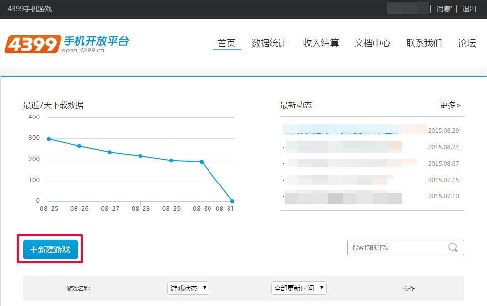
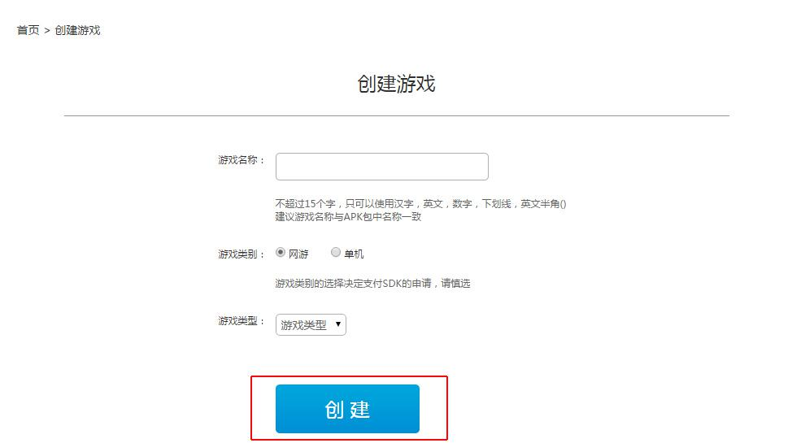
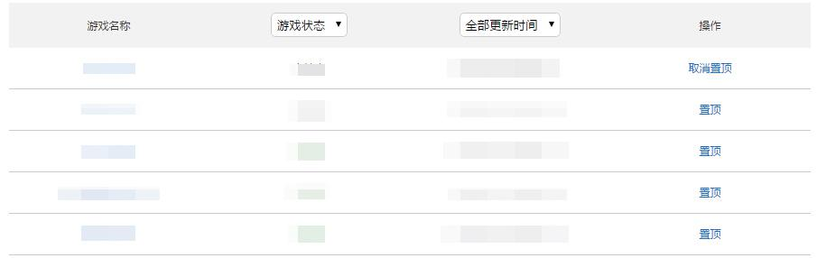
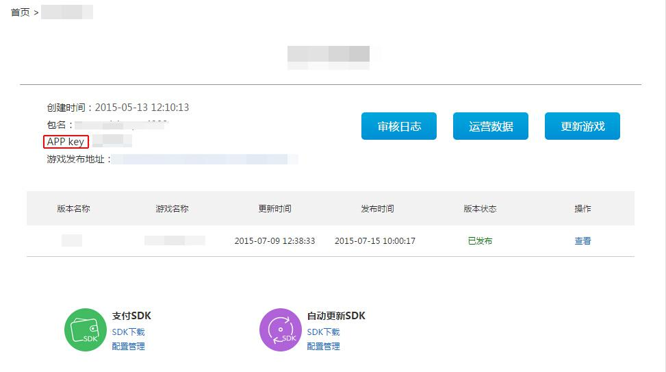
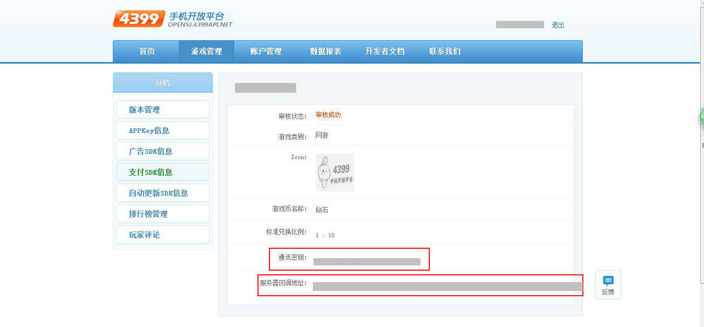

4399官方后台地址：http://opensj.4399api.net/
西瓜SDK所需的参数AppKey、AppSecret在4399后台索取。
获取参数步骤： 1. 注册开发者账号；
2. 登录4399渠道后台，点击【新建游戏】；

3. 填写游戏相关信息并点击创建；

4. 获取到的APPkey在游戏列表中点击游戏进行查看；


5. AppSecret在游戏管理页面的支付sdk信息页面获取。
